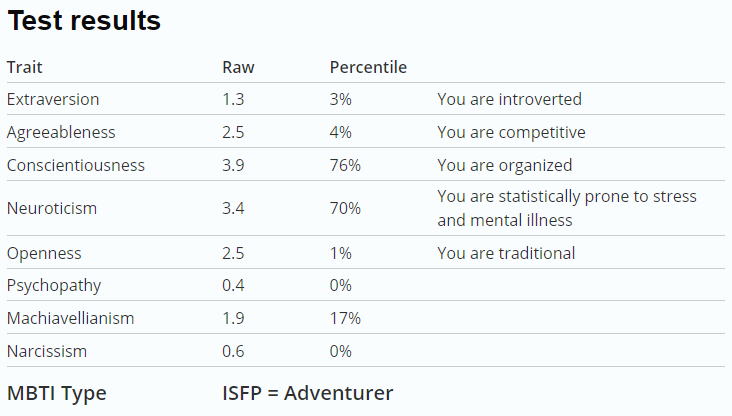
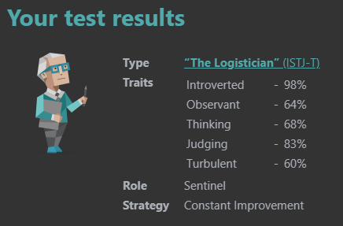

Overview
Using the Myers-Briggs test found at www.16personalities.com I was able to find out more about my personality, political views, prime relationship status and physical and mental health. The 16 personalities test covers an introduction of my personality. It includes an introduction of my personality the Logistician, their strengths and weaknesses, likely experiences in romantic relationships, friendships, parenthood, career path, workplace habits and conclusion.
Personal characteristics
The test predicted based on my answers that my political views would “align with those of the traditional Conservative” and that I “probably have peak physical health” based on my answers. For relationships: my conscientiousness score was above the 50th percentile. My agreeableness score was below the 50th percentile. My neuroticism score was above the 50th percentile. My openness score was below the 50th percentile. My extroversion score was below the 50th percentile.
Test Results
My personality profile
The 16 personalities test categorised me as Logistician in sections ISTJ-A / ISTJ-T. An overview of Logistician personalities from 16 Personalities describes them as having “integrity, practical logic and tireless dedication to duty make Logisticians a vital core to many families, as well as organizations that uphold traditions, rules and standards, such as law offices, regulatory bodies and military”. The Logistician personality makes up roughly 13% of the population and is quite common. 16Personalities also goes onto say “People with the Logistician personality type enjoy taking responsibility for their actions and take pride in the work they do – when working towards a goal, Logisticians hold back none of their time and energy completing each relevant task with accuracy and patience.” This is meant to highlight the unique dedication and work ethic of Logisticians.
My traits as a Logistician
Advantages and disadvantages of Logistician
16 Personalities also details the advantages and weaknesses of be a Logistician. Some advantages listed include being “honest and direct” to people, “strong-willed and dutiful” in work and conversation, “very responsible” for a variety of tasks, “calm and practical” while handling situations, “create and enforce order” for organising tasks and “Jacks-of-all-trades” to be useful in numerous areas and tasks. Some disadvantages listed include being “stubborn” towards ideas, “insensitive” and sometime hurtful to others with harsh honesty, “always by the book” which limits ability to experiment, “judgemental” which may create conflicts and issues and “often unreasonably blame themselves” this can be draining for Logisticians and the people around them and can cause burnout and a lack of self-trust.
Romantic relationships, friendships, parenthood and careers
In terms of romantic relationships Logisticians are describes as “dependable through and through”, however “their reserved nature often makes dating Logisticians challenging”. Meaning I can be relied upon to complete tasks; however, communication and agreeance may be an issue. Logisticians as friends are described as “not talkative, or particularly playful in their affection”, however “Logisticians stay by their friends’ sides no matter what, with a deepness of commitment”. This may be an issue for communication but reflects dedication to the group. For parenthood “Logisticians do not take their roles as parents lightly and will make it their work to ensure that this tradition is upheld to the highest standard”. For careers “Logisticians are much more focused on building long-term, stable careers” and “are almost a stereotype for the classic hard-working, dutiful employee”.
Summary of the Logistician profile
16 Personalities gives a short summary of the Logistician personality by stating “Few personality types are as practical and dedicated as Logisticians. Known for their reliability and hard work, Logisticians are good at creating and maintaining a secure and stable environment for themselves and their loved ones. Logisticians’ dedication is invaluable in many areas, including their own personal growth.”
What these test results mean for me
These test results generally indicate that I am introverted and do not like social interaction. I am also not very agreeable which tends to mean I am competitive in nature. I am very conscientious and like to be well organised and prepared. I also score highly in neuroticism, meaning I am likely prone to stress and mental illness. I terms of openness I am very traditional and tend to keep to myself. In terms of psychopathy, I have a low score and am likely not a psychopath. I have a low score in Machiavellianism, indicating a high sense of morality. I also have a very low level or narcissism and self-pride.
How will the test results influcene my behaviour in a team
In terms of team behaviour, these results tend to suggest that I am introverted and competitive. This may not be the best traits for a team member, as you would usually want clear and coherent communication and few arguments and disagreements. I am also organised and can help with planning and ensuring that things are completed on time to a high standard, which may be helpful for managing the project and submitting it.
How will the test results influence me when forming a team
When forming a team, I should try to look for people who are not too confrontational, as I want to avoid arguments and confliction opinions. I should seek out people who are somewhat extraverted to have some level of communication for team members. I should also find team members who are organised and can work and understand me and the activities I do, otherwise it may be difficult to keep on the same page as my other group members.